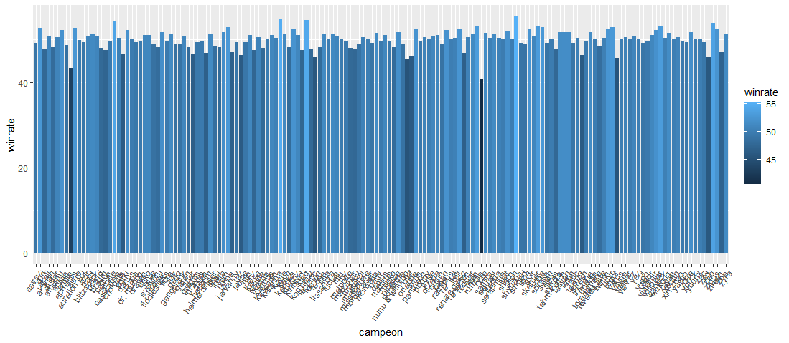
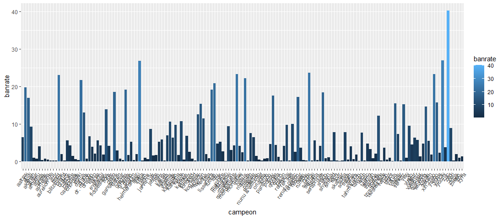
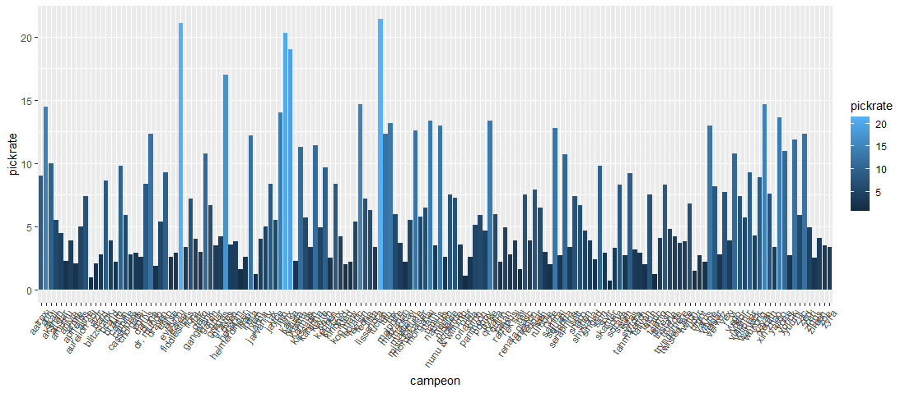
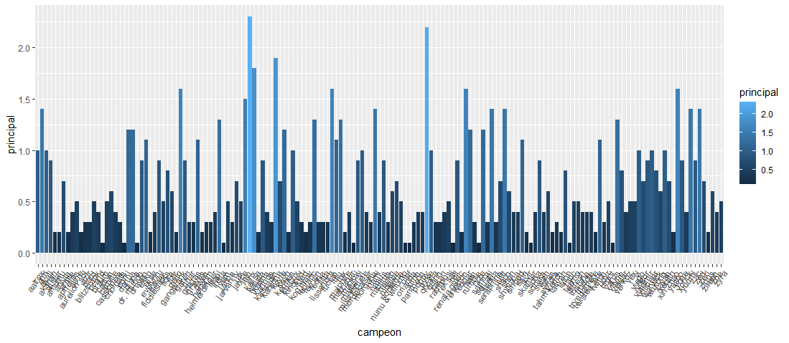
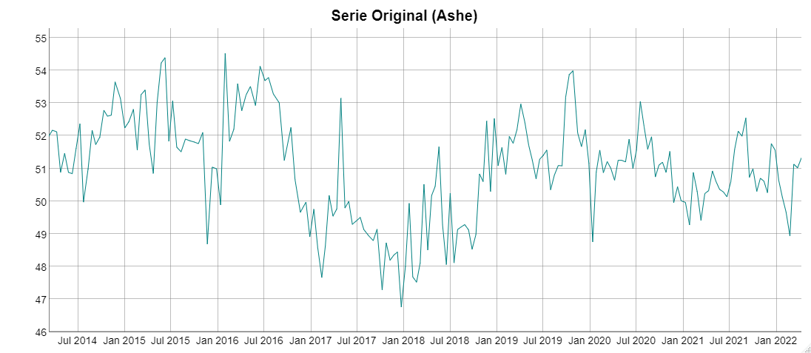
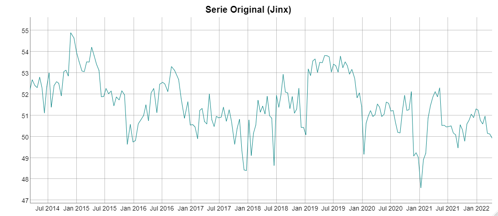

A browser demo for the pick recommender and a sample of the time-series analysis behind lolScout — the League of Legends champion-stats project built from two Bachelor's theses at Universidad Rey Juan Carlos. Everything on this page runs against data already scraped ahead of time; it doesn't scrape leagueofgraphs.com live.
This demo runs entirely in your browser against a bundled patch snapshot
(data/champInfoVersionCSV.csv, the same sample shipped in
DataProcessing/) —
it's a fixed patch, not live data, and no request is made to leagueofgraphs.com from
this page.
Same weighted formula as
data_processing.py,
ported to JavaScript (app.js) — pick a role and tick off
champions already picked or banned this draft.
Loading sample data…
The Mathematics thesis behind this project clusters champions by how their stats behave over time and forecasts where they're headed next, using R (RStudio/). That analysis needs a full R environment and isn't recalculated on this page — these are genuine pre-generated results from that work, kept here as a sample of what it produces.





